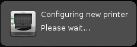

Hardware
Sound Configuration
Printer Setup
Graphic Drivers And Setup
Wireless Devices
Keyboard Hotkeys and Multimedia Keys.
Finding more help
Drivers
Wireless
To be written.
Graphics - Intel
To be written.
Graphics - ATI
To be written.
Graphics - NVIDIA
To be written.
Graphics - Other
To be written.
To be written.
1. The Audio Icon can be found in the lower right hand corner, commonly referred to as the system tray.

2. Hovering over the icon will show you the volume currently set, If you left click it will toggle mute and unmute for the Master volume.

3. Right clicking on the sound Icon will bring you a menu with a few options, you can select Properties to adjust a few options.

4. You can select Sound card, Mixer, and what command the Left click uses.
Generally You will not need to adjust any of the settings aside from selecting Sound card.

5. If your unable to hear any sound, you would need to check the audio settings with alsamixer.
Type the following into a Terminal window. (Located under the Accessories section of the Menu.)
| alsamixer |

6. If your sound card doesn't appear to be the default, You can toggle this by selecting the proper card and pressing F6.
7. You have a few choices of what to view, Playback (pressing F3) and Capture (Pressing F4). For our
purposes you'll be pressing the F3 key and looking at master, or any other choices focusing on the lower part of the meters. You'll want to see OO if it displays MM your device and muted, to toggle this press the m key. To adjust sound levels in this case you simple press the up and down keys accordingly. This method can be used for both out going audio and incoming. For example some people need to
manually adjust volume for a microphone to do this press F4. You can then toggle mute and adjust volume for your needs.
Resources for Audio Drivers
Ubuntu Wiki Contains a list of guides to configuring specific drivers for older and odd sets of sound cards.
Halfgaar Has a great guide to setting up surround sound under linux.
1. Plugging in a printer will prompt a dialog if detected and attempt to find a matching driver. (If your driver was
plugged in during your initial install you may not see a prompt, you may refer to step 3 below.)

2. If a printer and driver has been detected you will see this dialog. (Note, the dialog should appear in
upper right of your screen)

3. You can further configure or manage printing jobs or printers by going to printing located in
Menu> System> Printing.

4. Once you open the Printing menu it will bring you to a simple dialog to select view and manage options related to your printer.

5. You can find options for a printer by highlighting (single clicking) on the icon of the printer you wish to manage.

6. If a printer if not listed in the window after opening it you will need to plug in the device and click on the + sign located below the menu.

7. Once you click on the + sign above, you will see this window. If the Printer was detected properly. You can then select the method of connect and printer on the pane near the bottom of the window. (You may see more then one option if your device is an all in one device, so select from the left pane carefully.) From here you can also Select Network printers if you are connected to a home network and printer is available.
7.1 If for some reason you are unable to see network printer on a machine using
Windows you may need to configure samba (a sharing and networking tool for Linux >
Windows) You can find help doing this here, as well as a thread for samba on the Linux Lite forums here.

8. Clicking Forward on the above window will bring you to this window where you can
set the Printer Name, Description and Location for the printer.
However Description and Location are not required, unless you share a printer or use one over a network.

9. Administration of Cups can also be handled by the web interface by clicking
here
Resources for compatible printers
Open Printing Printer listing. Driver listing can also be found here
HP
Compatible printers can be found here.
Ubuntu's Wiki also contains a list of known working and
compatible drivers and printers.
To be written.
You can find information for adding or modifying hotkeys (or shortcuts) on the XFCE wiki
To be written.
Feel free to seek advice or help on the forums at any point. Or use any other means of support or contact located here. If you can not find a solution contained in this page or links of related information.